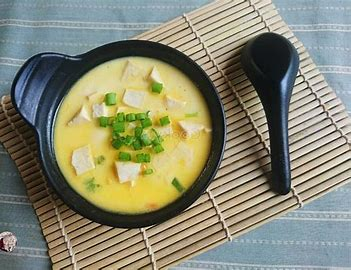

How to make egg steam!
First you need 3 egg and one bowl and tuna fish sauce also you need mirsack and sesame oil to make egg steam. Also you need mycrowave.
First we put a 3 egg to the bowl and miss!next put yuna fish sauce one spown and put mirsack one spown and put sesame oil one squwn lastly pur 400ml of water. And then put it in the mycrowave of 4 mintes then it is done!
